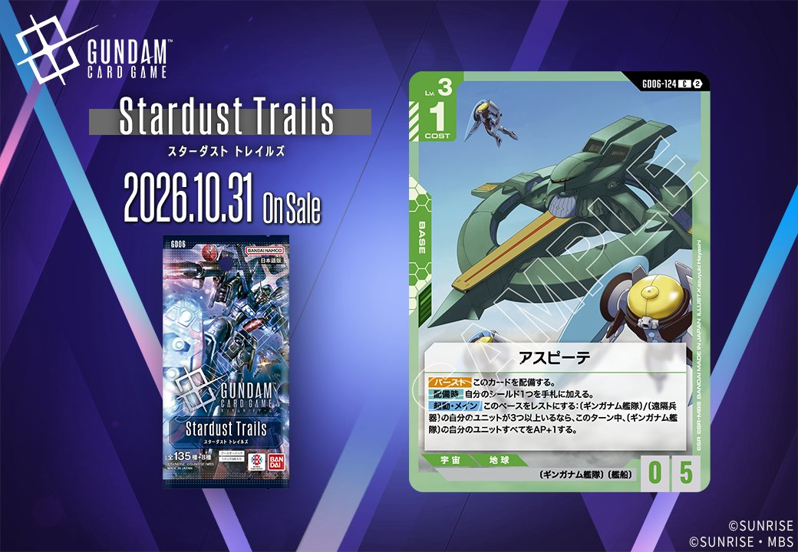
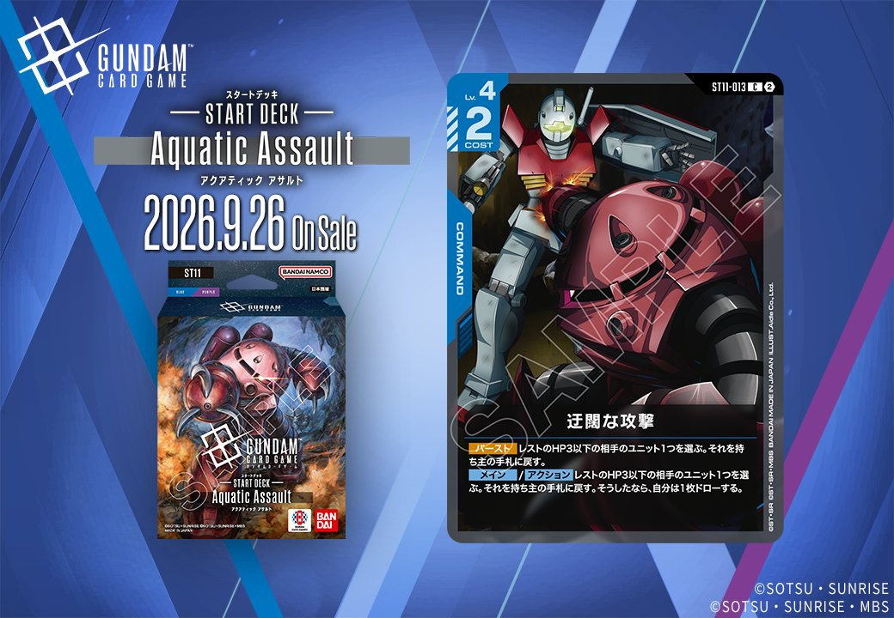

今回は2種のカードを取り上げます。GD06収録の緑のBASE「アスピーテ」(GD06-124)は2026年10月31日発売、ST11収録の青のCOMMAND「迂闊な攻撃」(ST11-013)は2026年9月26日発売です。異なる拡張に属する2枚を、認識データに基づき確認していきます。

アスピーテ (GD06-124)
| 色 | 緑 | タイプ | BASE |
| Lv | 3 | コスト | 1 |
| AP | 0 | HP | 5 |
| 特徴 | 〔ギンガナム艦隊〕、〔艦船〕 | ||
効果: 【バースト】このカードを配備する。【配備時】自分のシールド1つを手札に加える。起動・メイン このベースをレストにする:〔ギンガナム艦隊〕/〔遠隔兵器〕の自分のユニットが3つ以上いるなら、このターン中、〔ギンガナム艦隊〕の自分のユニットすべてをAP+1する。
アスピーテ（GD06-124）はCOST1・HP5の緑BASEで、【バースト】での自動配備と【配備時】のシールド1枚を手札に加える効果を持ち、ピースミリオンやラー・カイラムと同様の防御的な基盤運用が可能です。起動・メインで自身をレストにし、〔ギンガナム艦隊〕/〔遠隔兵器〕のユニットが3つ以上いる場合に〔ギンガナム艦隊〕全体をAP+1する効果を持つため、同特徴のユニットを並べる盤面での打点補強役になります。2026-10-31発売で、リンクは持ちません。

迂闊な攻撃 (ST11-013)
| 色 | 青 | タイプ | COMMAND |
| Lv | 4 | コスト | 2 |
効果: 【バースト】レストのHP3以下の相手のユニット1つを選ぶ。それを持ち主の手札に戻す。メイン／アクション レストのHP3以下の相手のユニット1つを選ぶ。それを持ち主の手札に戻す。そうしたなら、自分は1枚ドローする。
迂闊な攻撃(ST11-013)はコスト2の青コマンドで、【バースト】と「メイン／アクション」の両方でレストのHP3以下の相手ユニット1つを持ち主の手札に戻せる。メイン／アクションで使えば戻したうえで1枚ドローと、盤面干渉と手札補充を同時にこなせる点が扱いやすい。 破壊ではなくバウンスのため配備コストの再負担を強いる形で、レスト状態のHP3以下という条件からアタック後のユニットを狙いやすい一方、対象がいないと能動的に撃てない点は留意したい。2026-09-26発売。
関連カード
-
 ピースミリオン(GD03-125)緑系デッキ内採用率10.4% (504デッキ)
ピースミリオン(GD03-125)緑系デッキ内採用率10.4% (504デッキ) -
ラー・カイラム(GD05-125)緑系デッキ内採用率5.7% (277デッキ)
-
 ファルメル(ST03-016)緑系デッキ内採用率2.6% (125デッキ)
ファルメル(ST03-016)緑系デッキ内採用率2.6% (125デッキ) -
 ソドン(ST13-016)NEW緑系 — 同色・共通特徴: 艦船（新カード）
ソドン(ST13-016)NEW緑系 — 同色・共通特徴: 艦船（新カード） -
 アムロ・レイ(ST01-010)青系デッキ内採用率53.7% (2599デッキ)
アムロ・レイ(ST01-010)青系デッキ内採用率53.7% (2599デッキ) -
 ガンダム(ST01-001)青系デッキ内採用率52.1% (2523デッキ)
ガンダム(ST01-001)青系デッキ内採用率52.1% (2523デッキ) -
 覚悟の表れ(GD01-100)青系デッキ内採用率51% (2472デッキ)
覚悟の表れ(GD01-100)青系デッキ内採用率51% (2472デッキ) -
 コルシカ基地(ST02-016)青系デッキ内採用率38.2% (1849デッキ)
コルシカ基地(ST02-016)青系デッキ内採用率38.2% (1849デッキ) -
 ガンタンク(GD01-008)青系デッキ内採用率37.7% (1828デッキ)
ガンタンク(GD01-008)青系デッキ内採用率37.7% (1828デッキ)